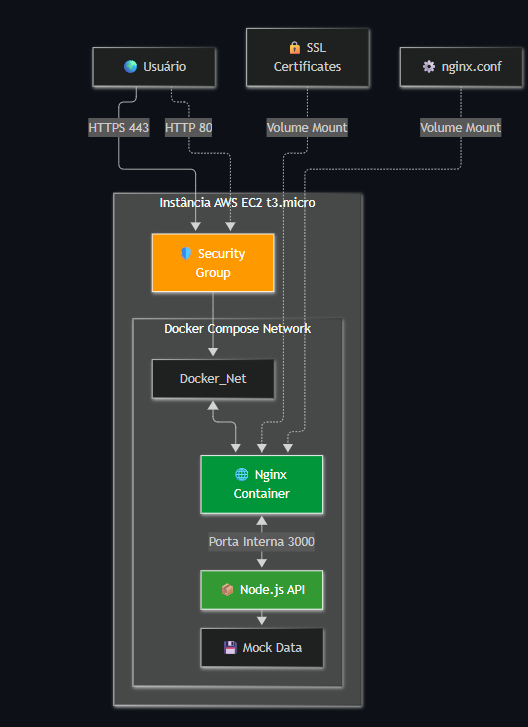
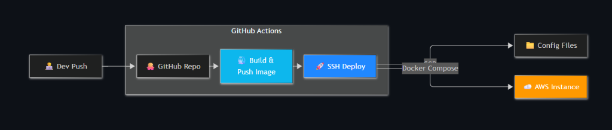

Infraestrutura Cloud & CI/CD — AWS DevOps Deploy
Implementação de uma infraestrutura em nuvem na Amazon Web Services (AWS) para publicação resiliente e escalável de uma API em Node.js/Express, orquestrada com Docker Compose, protegida por Nginx como Proxy Reverso com suporte a SSL/TLS, e automatizada por uma esteira completa de CI/CD no GitHub Actions com paridade de ambientes e estratégia de rollback instantâneo e imutável.
Nota sobre Ambientes de Nuvem: A infraestrutura foi provisionada e validada em instâncias AWS EC2 (t3.micro) com ambientes segregados de Staging e Produção. Após os testes de validação da esteira e conformidade, os servidores foram desativados para otimização de custos com nuvem, permanecendo todos os manifestos (
docker-compose.yml,nginx.conf, Dockerfile e GitHub Actions) documentados e prontos para provisionamento.
Contexto e Desafios
O projeto foi concebido para estruturar uma esteira de entrega contínua moderna e segura para serviços web, abordando desafios comuns de arquitetura e infraestrutura:
- Exposição indevida da aplicação: Evitar que a API Node.js seja acessível diretamente pela internet em portas públicas, isolando-a em uma rede virtual interna atrás de um Proxy Reverso com terminação TLS/SSL.
- Eliminação de tarefas manuais de deploy: Automatizar a verificação estática de código (ESLint) e testes unitários (Jest) a cada push, prevenindo falhas em produção decorrentes de erros humanos.
- Paridade entre ambientes: Garantir que o ambiente de homologação (Staging) replique fielmente o ambiente produtivo (Produção), minimizando discrepâncias comportamentais entre fases.
- Rollback rápido e determinístico: Eliminar o risco de dependência da tag
:latestdo Docker, implementando versionamento imutável baseado no SHA do commit do Git para reversão em segundos em cenários de contingência.
Stack Tecnológica
- Provedor de Nuvem: AWS (Amazon Web Services) — Instância EC2 (t3.micro / Linux), Security Groups com portas restritas e AWS CloudWatch.
- Orquestração & Contêineres: Docker (multi-stage build com Node 18 Alpine) e Docker Compose.
- Proxy Reverso & Servidor Web: Nginx (gerenciamento de certificados SSL/TLS, injeção de headers de segurança e redirecionamento de tráfego HTTP porta 80 para HTTPS porta 443).
- Esteira de CI/CD: GitHub Actions (workflows dedicados para
mainestaging, buildx de imagens, envio ao Docker Hub e deploy remoto via SSH/SCP). - Registro de Imagens: Docker Hub com versionamento dual (
latest+ Git Commit SHA). - Qualidade de Código & Testes: ESLint (linting de padrões) e Jest (testes unitários automatizados).
- Backend: Node.js com Express, suporte a CORS e logging estruturado com tempo de resposta em milissegundos.
- Segurança & Hardening: Contêiner configurado com usuário sem privilégios de superusuário (
USER nodeuser), redução de superfície de ataque e injeção de credenciais via GitHub Secrets.
Arquitetura da Infraestrutura
A solução emprega um padrão de Proxy Reverso. A aplicação Node.js permanece isolada na porta interna 3000 dentro da rede gerenciada pelo Docker Compose (Docker_Net), sem qualquer exposição direta ao exterior:

Topologia da infraestrutura: fluxo de tráfego externo interceptado pelo Nginx com certificados SSL e repassado internamente à API Node.js.
Componentes da Infraestrutura
- Instância AWS EC2 (t3.micro): Servidor Linux atuando como host para o Docker Engine e Docker Compose. O Security Group libera exclusivamente as portas necessárias (80 para redirecionamento, 443 para HTTPS e 22 para conexão administrativa SSH).
- Nginx Container: Ponto único de contato com o usuário. Trata conexões HTTPS seguras na porta 443, consome os certificados SSL montados via volume (
:ro) e encaminha as requisições autenticadas para o serviço internoapp:3000. - Node.js API Container: Executa a aplicação sobre imagem leve Node Alpine sob o usuário restrito
nodeuser. Interage com dados mockados e rotas operacionais (/status), respondendo ao proxy com tempos médios de resposta registrados em log.
Pipeline de CI/CD Modularizado
O fluxo de automação foi projetado no GitHub Actions para garantir deploys previsíveis, testados e automatizados a cada alteração aprovada no repositório:

Fluxo de automação: validação de código (CI), geração de artefatos conteinerizados e deploy remoto seguro na instância AWS.
Fases do Pipeline
- Validação Automática (CI): A cada push na branch monitorada, o runner configura o ambiente Node.js, restaura o cache de dependências e executa:
npm run lint: Verificação de boas práticas e padronização com ESLint.npm test: Execução de suíte de testes automatizados com Jest.- Qualquer erro nesta etapa interrompe o pipeline imediatamente, prevenindo deploys com código instável.
- Build e Registro Imutável (CD): Com os testes aprovados, o pipeline autentica no Docker Hub e gera a imagem via Multi-stage build:
- Descarta arquivos de desenvolvimento e compilação na imagem final.
- Cria duas tags no registro:
lacrei-api:latestelacrei-api:${{ github.sha }}. - Deploy Remoto Seguro via SSH e SCP:
- Cópia segura dos manifestos
docker-compose.ymlenginx/default.confpara a pasta do ambiente na instância AWS via SCP. - Execução remota de script de provisionamento via chave SSH privada:
- O parâmetro
--force-recreaterecria o container com a versão recém-baixada, edocker image prune -flimpa imagens intermediárias para preservar o espaço em disco da EC2.
Paridade de Ambientes: Staging vs. Produção
Para possibilitar validações completas antes da disponibilização em larga escala, foram estabelecidos workflows e destinos independentes para homologação e produção:
| Atributo | Ambiente de Staging (Homologação) | Ambiente de Produção |
|---|---|---|
| Branch de Acionamento | staging |
main |
| Arquivo de Workflow | .github/workflows/staging.yml |
.github/workflows/production.yml |
| Infraestrutura Alvo | Instância AWS EC2 t3.micro | Instância AWS EC2 t3.micro |
| Diretório na Instância | ~/app-staging |
~/app-production |
| Finalidade | Validação de novas funcionalidades e testes de carga | Disponibilidade operacional contínua |
| Gestão de Segredos | Credenciais isoladas via GitHub Secrets | Credenciais isoladas via GitHub Secrets |
Segurança e Hardening
A infraestrutura foi configurada de acordo com premissas essenciais de segurança cibernética para ambientes de contêiner:
- Isolamento de Rede Docker: Utilização de
expose: - "3000"no Compose, mantendo a porta da API acessível somente aos contêineres vizinhos dentro da rede interna. - Usuário Não-Root: O Dockerfile declara a criação explícita de usuário e grupo desprivilegiados:
- Imagens Base Alpine: Redução drástica da superfície de ataque e vulnerabilidades conhecidas (CVEs) ao utilizar
node:18-alpine. - Zero Credenciais no Git: Todas as credenciais, endereços de servidores e chaves privadas são injetadas estritamente em tempo de execução via GitHub Secrets.
- Menor Privilégio na AWS: O Security Group da EC2 bloqueia acessos externos desnecessários, restringindo a porta 22 para operações autorizadas.
Estratégia de Rollback & Imutabilidade
Depender exclusivamente da tag mutável :latest dificulta a recuperação imediata em caso de falha em produção.
Ao marcar cada imagem com o identificador do commit Git (${{ github.sha }}):
- Recuperação Imediata (MTTR de poucos segundos): Em caso de anomalia, basta apontar a variável
IMAGE_TAGpara o commit anterior estável e disparardocker-compose up -d, sem necessidade de recompilar a aplicação. - Rastreabilidade e Auditoria: Cada instância de contêiner em execução possui correlação direta com uma alteração precisa registrada no versionamento de código.
Observabilidade e Health Check
- Health Check do Contêiner: A integridade da aplicação é checada periodicamente pelo Docker Compose:
O Nginx aguarda a confirmação de integridade antes de rotear o tráfego (
healthcheck: test: ["CMD", "curl", "-f", "http://localhost:3000/status"] interval: 30s timeout: 10s retries: 3 start_period: 20sdepends_on: app: condition: service_healthy). - Registro de Latência: Um middleware em Node.js monitora o tempo de resposta de cada chamada HTTP em milissegundos e envia logs estruturados para o stdout do contêiner.
- Métricas AWS CloudWatch: Acompanhamento contínuo dos recursos da instância EC2 (CPU, consumo de memória, throughput de rede e I/O de disco).
Comandos Úteis de Operação
Comandos utilizados na administração e diagnóstico dos contêineres na EC2:
# Acompanhar logs da API em tempo real
docker logs -f app-1
# Acompanhar logs de tráfego e proxy do Nginx
docker logs -f nginx-1
# Inspecionar o estado do healthcheck da aplicação
docker inspect --format='{{json .State.Health.Status}}' app-1
# Monitorar uso de CPU e memória em tempo real
docker stats